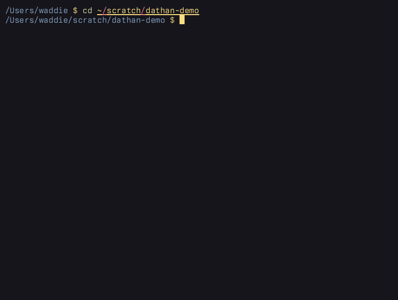

Syntax highlighting with dathan
I like syntax highlighting. No subtlety for me. Make it garish. Make it look like an explosion in a sweet shop.
I don’t like most of the common ways to get syntax highlighted code onto the web: pygments, chroma, highlight.js, etc. Their lexers always do things at least slightly differently from the way it looks in my editor. And different is obviously worse.
Helix ships with tree-sitter support and highlight queries for hundreds of languages, and with hundreds of themes. I spend all day looking at it. That’s the way things are supposed to look. tree-sitter parsing even gives us semantic classes for every symbol. Nearly all the relevant Helix functionality is already packaged as a crate. Why can’t we use all this painstakingly-wrought machinery outside the editor?
Turns out, we can.
dathan is a command-line utility for syntax highlighting code exactly the same way
Helix does it, by piggybacking on Helix’s comprehensive runtime folder (plus any
additions or customisations in your .config).
By default, it will output ANSI escape codes to the terminal:

dathan. asciinema doesn’t record the background colour for some reason,
so you’ll have to take my word for it, but all three versions are identical.Or you can output in HTML or Hiccup, with either semantic classes or inline styles:
dathan fizzbuzz.clj \
--theme hazyland --format edn-hiccup --inline | pbcopyThat gives me Hiccup ready to paste directly into a post, which renders like this:
(ns fizzbuzz
(:require [clojure.core.match :refer [match]]))
(defn fizzbuzz
"Calculate FizzBuzz"
{:malli/schema [:function [:=> [:cat :int] :string]]}
[n]
(match [(mod n 3) (mod n 5)]
[0 0] "FizzBuzz"
[0 _] "Fizz"
[_ 0] "Buzz"
:else (str n)))
(doseq [n (range 1 101)]
(println (fizzbuzz n)))
All the heavy lifting in dathan is being done by the Helix tree-sitter crate, tree-house, and the grammars and queries of the Helix runtime. dathan itself is a couple of thousand lines of relatively trivial code mostly concerned
with resolving your environment and spitting out the results wrapped in the
appropriate tags – a fairly direct translation from tree-sitter’s abstract syntax tree.
dathan currently has backends for outputting ANSI escape codes, HTML, and EDN
or JSON flavoured Hiccup. HTML/Hiccup can have inline styles or classes with
separately emitted CSS.
Strictly speaking you don’t even need to have Helix installed, you just need the runtime folder. But installing Helix is the easiest way to get that.
Anyway, if it’s useful to anyone else, the repo is here.